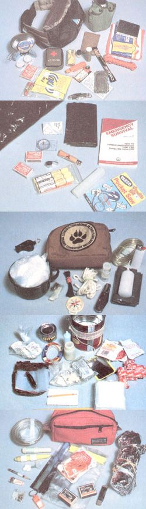
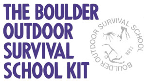
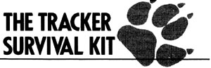
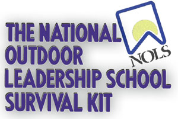
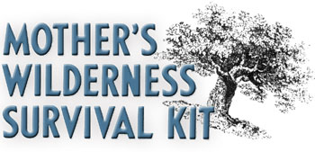

If four wilderness skills experts were given $50 each to put together survival kits, how would their choices agree and how would they differ?
When asked by a greenhorn Easterner if he'd ever been lost, Jim Bridger-one of America's most intrepid explorers and mountain men of the early 1800s-is said to have replied (and we paraphrase), "No, don't reckon I was ever lost . . . but I was powerful turned around for three weeks one time."
Less than half a century later, Mark Twain wrote (in Roughing It) of having been stranded with two fellow travelers in a blinding snowstorm somewhere in the remote sagebrush deserts of eastern Nevada. Too fearful to part company and search for shelter from the storm, the trio-tenderfeet all-huddled together like a covey of quail against the cold and tried to get a fire started. Failing that, the luckless pilgrims slumped into a general depression and fell to confessing their sins and offering to repent if only they might be allowed to outlive their predicament. They survived the storm-but barely-and, with the light of morning, discovered that they'd spent the entire night just a few steps from the safety and comfort of a stage station.
Those two stories represent the extremes of wilderness survival preparedness: Mountain man Jim Bridget, though he might at times have wandered the wilderness alone for weeks before finding his way out, never considered himself lost-a word that to him indicated a sense of helplessness-because he was absolutely at home in the w wilderness at the opposite extreme, Twain and his fellow greenhorns came very close to perishing as much from despair as from the elements . . . with safety just a stone's toss away.
If you were out hunting, fishing, or hiking one day and suddenly found yourself "confused" and very much alone, would you react like a Bridget . . . or a Twain? Wilderness survival experts agree that nothing can replace experience as the best backwoods life insurance. But they're also unanimous in their conviction that next to experience comes preparationin the form of a light, compact survival kit that can be carried along anytime you venture off the beaten path.
Since few folks these days have either the opportunity or the inclination to become Jim Bridgers-but many nonetheless do trek into the boonies occasionally or even frequently-we asked four of America's leading authorities on wilderness living to each devise and send us a survival kit that would be compact and light enough to be carried along on any outing.
The results of our survival kit survey, presented on the next two pages, should prove enlightening to anyone who's interested-as every-one should be-in living through a wilderness emergency.
Doug Nelson, director of the Boulder Outdoor Survival School (University Station P.O. Box 7215, Provo, UT 84602), puts "the will to live" at the top of his survival necessities list.
"So often," Doug explains, "our self-confidence is derived from external objects. But objects can be taken away from us. Consequently, the will to survive a life-threatening situation must come from inside."
But there's no denying that a few essentials can go a long way in assisting that will to survive, so Doug put together the following kit:
2 packets of Pripps Plus powdered drink mix-for energy and to replace body salts
6 bouillon cubes-for improving the taste of water and to replace salts
1 6-foot length of twisted wire fishing leader-for fishing and for making snares
6 size 12 snelled fishhooks with leaders
1 small, clear-plastic fishing float
1 dry fly-for fishing and for catching frogs
30 small split-shot sinkers
1 sliding sinker
1 inexpensive aluminum canteen
50 iodine water-purification tablets
2 small candles-for illumination, starting fires, and signaling for help
1 Cyalume Lightstick-for illumination and signaling
1 vinyl poncho-for a raincoat, shelter, rainwater collection, ex tra warmth, and signaling
1 Space Blanket-type foil blanket-for signaling and warmth
2 boxes of water-and windproof matches-for lighting fires and signaling
1 army surplus chemical-heat bar-for starting fires
1 fuel-tablet stove-for heating food and boiling water for purification
6 compressed chemical-fuel tablets-for stove fuel and starting fires
1 carbon steel multibladed (including fork and spoon) knife-for
cutting and as a striker for starting fires with flint and steel
1 Sierra-type camper's cup-for drinking, eating, cooking, and signaling
1 multiuse plastic canister-for waterproof storage of matches
(includes built-in whistle, mirror, flint striker, and compass)
1 packet of toilet paper in a damp-proof pouch
1 50-foot length of nylon parachute cord-for fastening and building
1 small waterproof plastic container-for any important per sonal medications
1 packet of plasticized survival cards-printed with information on wilderness survival and first aid
1 small first aid kit
Doug's kit cost $47.13 to assemble (the price includes a durable nylon belt pack that houses the works), weighs 3 pounds 7 ounces, and measures 5" X 5" X 11".
Ian R. Wade, of Outward Bound USA (384 Field Point Rd., Greenwich, CT 06830), reports that his goal in designing a survival kit was to "keep it small and light so it would actually be carried." Ian spent $46 assembling a 1 pound 9 ounce kit that's wrapped in a large, black-plastic garbage bag. The bundle is compact enough (2" X 6" X 9") to fit into a large pocket in a jacket or pants, and includes the following:
1 copy of Emergency Survival: How to Handle Emergencies That Can Threaten Your Life, by Charles A. Lehman (Technical Book Co., 2056 Westwood Blvd., Los Angeles, CA 90025)-for information to help a person make sensible decisions in a survival situation
1 large, black-plastic garbage bag (in addition to the one the kit is wrapped in)-for shelter from wind and rain
2 boxes of wind- and waterproof matches
1 flexible steel (wire) pocket saw-for cutting firewood and con structing shelter
1 large candle
1 folding knife
1 Silva compass (with instructions for use)
1 metal whistle
3 small, red aerial signal flares (with launchers)
"The trouble with survival kits," cautions Tom Brown Jr. (The Tracker, P.O. Box 173, Asbury, NJ 08802), "is that people too often rely on them to replace essential survival skills, rather than merely to augment them. Before carrying my-or any-survival kit into the woods, first be sure you know how to use the items it contains."
The Tracker's low-priced ($10) kit is stored in a waterproof 4" X 5" X 6" belt bag, teases the scales at a mere 1 pound 2 ounces, and includes
1 large plastic garbage bag-for rain protection and to serve as a ground cloth. Tom says that while a Space Blanket would do both jobs better, the plastic bag is sufficient if the survivor knows how to build a debris hut. (For information on debris huts and other survival essentials, see "At Home in the Wilderness" in MOTHER N0. 93.)
1 solar still (consisting of 6 feet of plastic tubing, a 3' X 3' sheet of heavy plastic, and a metal cup for collecting the condensed water)
1 Bic disposable lighter
1 small candle
1 50-foot length of nylon cord-for making a bow-drill firestarting apparatus, attaching spearheads to saplings, and repairing equipment
1 multibladed folding knife
1 60-foot length of 80-pound-test nylon fishing line-for fishing
and for making snares
12 fishhooks in assorted sizes
1 compass
1 plastic whistle
1 bottle of chlorine water-purification tablets
Web Webster, of the National Outdoor Leadership School (P.O. Box AA, Lander, WY 82520), says of his entry, "My intent was to build a kit using, as much as possible, common items that can be found around the house." Consequently, he was able to assemble his kit for only $24. Web believes in the usefulness of the items in his package, but cautions that "remaining calm and rational are the main ingredients for staying alive and healthy in a wilderness survival situation."
The National Outdoor Leadership School kit is housed in a threepound coffee can (total weight, including the can, is 3 pounds 11 ounces) and contains (in order of importance as ranked by Webster)
1 Space Blanket-type foil blanket
1 box of waterproof matches
1 multibladed folding knife
1 three-pound coffee can-for housing survival kit items, collecting and carrying water and food (berries, nuts, etc.), and use as a hobo stove (the can would, of course, require that the kit be carried in a backpack, but its items could be stored in a more convenient belt pouch)
1 small roll of strapping tape-for first aid, repairs, and shelter building
3 large plastic garbage bags
2 smaller plastic bags-for water storage and use as vapor barrier socks
1 large candle
1 10-inch-long, coarse-toothed hacksaw blade
1 50-foot length of nylon parachute cord
1 small (partial) roll of toilet paper
4 granola bars-for energy
2 packets of instant soup powder-for salt and to make water more palatable
4 packets of powdered spiced cider mix-to make water more palatable
15 tea bags-to make water more palatable
1 waterproof plastic container with several dozen matches
1 pencil-for taking or leaving notes
6 3 X 5 cards-for taking or leaving notes
1 small stainless steel camper's mirror-for signaling
1 seven-ounce can of Sterno-brand canned heat-for heating water, cooking, and starting fires
Not about to be outdone by mere experts, we Jim Bridgers on MOTHER's staff pooled our collective wilderness experience, purloined a few choice ideas from the authorities who put together the packs we've itemized in this article, and came up with MOTHER's Wilderness Survival Kit. While we're a bit red of face for having blown our entire $50 allowance purchasing our kit components (most people would probably have some of the items on hand), we're pretty proud of the fact that the whole shebang fits into a compact (3" X 6" X 8") belt pouch and weighs only 1 pound 7 ounces. Here it is:
1 heavy-duty Velcro-sealed waterproof plastic pouch-for water proof storage of small kit items and (if a survival situation arises) for dipping up and storing water
2 boxes of waterproof matches
5 fishhooks in assorted sizes
5 "matchstick" lead sinker strips
1 small rabbit-fur fishing jig-alluring to most species of fish in most parts of the world . . . and easy to use even with a sim ple stick-and-string rig
1 candle, wrapped with 30 feet of strapping tape for equipment repairs
1 pencil stub, wrapped with 20 feet of four-pound-test monofila ment fishing line
1 small, lock-blade folding knife (we assume that any outdoors person will carry a better knife outside the kit)
1 ceramic insulator-for knife-sharpening-wrapped with 30 feet of 50-pound-test Dacron fishing line (ceramic insulators can often be purchased for pennies at hardware and electrical supply outlets)
1 plastic signal whistle
2 packets of instant soup mix
2 packets of instant coffee
12 aspirin (in a small, sealed plastic bag)
1 waterproof container of personal prescriptions
1 straw-type water purifier
1 solar still kit-consisting of 6 feet of plastic tubing, a 3' X 3' sheet of heavy clear plastic, and a Sierra-type camper's cup
2 Space Blanket-type foil blankets-strapping-taped along three edges to form a make-do sleeping bag or shelter, with a collection of Tom Brown Jr. survival articles photocopied from back issues of THE Mother Earth News folded up inside the waterproof bundle of blankets. (The blank sides of the paper can be used to leave messages.)
When assembling your personal wilderness survival kit, you'll probably want to make sure that those items which appear in all four of our experts' lists are included in your kit as well. As for the rest-think about the weather, terrain, and other conditions prevalent in the backwoods areas you most often frequent, then pick and choose as you see fit (which is exactly what MOTHER's staff did when putting together our kit).
But keep in mind, as our experts repeatedly caution, that no survival kit, no matter how complete, will do you a lick of good if you don't have it with you when you need it, if you don't know how to use the items it contains, and if you're ignorant of basic wilderness survival skills.
Learn and practice a few skills, assemble and carry a few critical survival items, and you-like Jim Bridger-can be at home in the wilderness . . . even when you're confused as to just exactly where in the wilderness you are.
|
 Staff Photo |
 |
 |
|
 |
 |
|